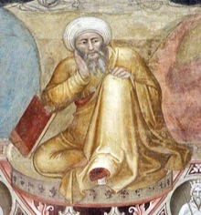

1126-1198 · Faith and Reason
← The philosophy map · About Averroes
When science and religious belief seem to disagree, does one of them have to be wrong?
Your friend is a scientist who also prays every day. At a party, someone tells her, "You can't believe in both. You have to choose." She smiles and asks, "Why?" Who is right? More than eight hundred years ago, a judge in Córdoba wrote a short book about exactly this argument.
Read one part at a time. After each part, close your eyes and answer the question before you check.
Ibn Rushd, known in Europe as Averroes, was born in Córdoba in 1126. At that time Córdoba was part of al-Andalus, Muslim Spain, a great centre of learning. His family were famous judges, and he became a judge too. He also studied medicine, and later he became the personal doctor of the caliph, the ruler. But the great passion of his life was the Greek philosopher Aristotle.
What were Averroes's two main jobs?
In 1169 Averroes met the caliph. According to an old story, the caliph complained that Aristotle's books were very hard to understand. Could someone explain them? Averroes took the job. For almost thirty years he wrote commentaries, careful explanations of nearly all of Aristotle's works. Later, these books were translated into Latin and Hebrew. In European universities, scholars called him simply 'the Commentator', because he taught them how to read Aristotle.
Why did European scholars call Averroes 'the Commentator'?
Some religious scholars said philosophy was dangerous for faith. In his Decisive Treatise, Averroes disagreed. The Qur'an itself, he wrote, invites people to think carefully about the world, so studying philosophy is a good thing for those who are able. And truth cannot contradict truth. If a careful proof seems to clash with a verse, the verse should be understood in a deeper, non-literal way. Even so, some of his books were burned. He died in Marrakesh in 1198.
Why, according to Averroes, can't true philosophy and true religion really conflict?
Each word is hidden in a sentence. Read it aloud and say what you think the bold word means. Then reveal and compare.
In each pair, is there a real contradiction, or does the clash disappear when you interpret the words carefully? Decide together, then reveal.
Now you: explain Averroes's idea to a friend who thinks science and religion must always fight. Speak for about a minute. Use the starters if they help.
A village has a beautiful old tradition: every spring, people walk to the river and give thanks for the water. A young scientist arrives and explains, correctly, exactly where the water comes from and why the river floods. Some villagers say the tradition is now pointless. Others say the science and the tradition can live side by side.
Tap two cards. Use the timer to keep going, and use at least two of the phrases above.
No looking back. Answer from memory first, then check.
What does Avicenna's flying man show, according to Avicenna?
What did Augustine mean by a divided will?
According to Epicurus, what is the secret of a happy life?
What did Heraclitus mean by 'You cannot step into the same river twice'?
From memory, out loud. Then check.
1. What did Averroes believe about faith and reason?
2. Why was Averroes called 'the Commentator' in Europe?
3. Where was Averroes born, and what were his jobs?
4. What does 'reconcile' mean? Give an example.